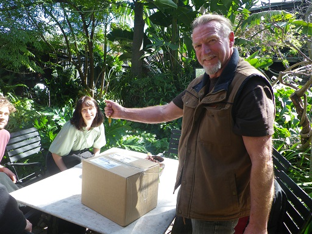
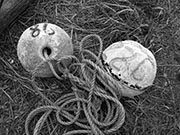

|
Two That Got Away
: Jim Ewing |
|||||||
 |
Book Description
William James 'Walrus' Rose’s long-term relationship with volatile
ex-erotic dancer Jill has finally turned turtle. As an unsuccessful
actor/author/playwright, he's also had a gutful of The Arts with its
anus-lickers and parasites.
Better a dinkum profession where a bloke's only ambitions are to catch lobster and avoid drowning. Within a day of arrival in Port Gong the locals reduce his nickname ‘Walrus’ to just 'Rus', and he finds work as a deckie with Possum Wright, eccentric skipper of the local fishing fleet's smallest vessel. Possum is a delightful fellow with whom to fish, but Rus has been warned he can be dangerously erratic. Rus therefore seldom completely relaxes when they are offshore. The Southern Ocean is a wondrous but challenging workplace. When its waters turn murderous it is not the spot to be in a small craft beside a bloke, by now far more your cobber than your boss, who appears to be losing his mind. "Characterized by wit, energy,
and sharp perception, his writing is wise and always entertaining."
John Clarke
"In regard to his favourite
theme, the sea, he is better qualified to speak on the subject than
anyone I know."
Bruce Pascoe
ISBN: 9780648038733 304 pages $29.00 |
|||||||
 Jim Ewing opening the first box of his books to arrive | ||||||||
Book Sample
PART
ONE
 TREADING WATER
Within Port Gong the grammatical form ‘-ing’ had, like some over-hunted
ocean species, all but ceased to exist. ‘Never friggin was used
hereabouts, and friggin good chance it never will be in future
neither,’ reckoned a particular retired skipper who con-sidered himself
too Christian to ever utter in public the common foreshortening of
fornicate. Isolated individuals who did ‘talk proper’ were posh
newcomers and the odd too-educated type. However, few of these
think-my-shit-don’t-stinkers ever wished to be seen near smelly fish or
a commercial catch boat, so they weren’t much chop anyhow.
But yeah, ‘-ing’ had pretty much been given the arse. Its use indicated such speakers had tickets on themselves. If a bloke spoke of fucking in the participatory sense, it meant he shagged other males or was at the least very, very sus. Such anachronistic societal attitudes prevailed as much as did salt and rust in the town’s buildings and machinery. Port Gong offered fishin and drinkin and fightin, minimal fuckin, and little else unless you counted feedin-your-face-on-fish-an’-chips. I did have, however, nicknames. Everyone copped one. Again, always had done, bloody good chance they always would, irrespective of changing demographics. The locals tended also to cut already neat monikers even shorter. Shit, even the joint’s name itself, way back in 1899, got chopped. Originally, Port Wobbegong (after the world’s ugliest species of shark abundant in those waters), an official change and it became just Port Gong. Perhaps reasonably, the town’s small band of merchants claimed Wobbegong sounded too much like ‘woebegone’, and burgs with dismal and miserable sounding tags did bad business. Present day townsfolk referred to it simply as ‘Port G’ or ‘The Gong’. This to a degree tied in too with their tradition of trimming existing nicknames. For example, a well-matured male fleeing city living and arty inclinations might drive his battered old Holden station wagon into this remote seaside community feeling quite content with his longstanding tag of ‘Walrus’... Constructed of huge basalt boulders the curving breakwater ended inshore with a concrete loading dock. Alongside this were roped two large lobster boats. Nearby a bristly burly bow-legged beer barrel of a bloke wearing white sea-boots loaded a damaged lobster pot into the rear of a late model 4x4 ute. The newcomer, judging him to be about fifty, asked if there were any jobs available. ‘Maybe,’ responded the fisherman, sizing up the taller, older, slimmer but quite broad-shouldered bloke who’d spoken. And then, ‘Gotta name, mate?’ ‘William.’ ‘Bit poofy. Anythin else?’ ‘Willy?’ ‘Even fuckin worse... Aincha gotta nickname?’ ‘My mates call me Walrus.’ ‘Ay Zil,’ the fisherman called down to an even bigger and burlier bloke, also shod in white sea-boots, aggressively tinkering with his boat’s rudder. ‘Wot’s ya problem, Dags?’ ‘Bloke here’s chasin a bitta deckie work... that right, Rus?’ Yes, from ‘Walrus’, William James Rose had become just ‘Rus’, and straightaway, yeah, he’d liked it. Fingering a tiny cornflake crust of sleep from the corner of one eye, Rus rolled onto his side, read mobile phone’s illumined face: 1.42 a.m. Two minutes ago its Can-can alarm had reefed him out of a discombobulating sharks and drownings and castrating mermaids dream. ‘Come on, up, get up,’ he coaxed himself—to go outside and deposit a copper log in The Shack’s dry dunny, then return to splash face and armpits at the cracked enamel wash basin, dress in jeans and T-shirt and boots, and thereafter drive up cross-paddock to The House to rouse Possum. And yet, Rus lay on. This king-sizebed dominating junk-crammed back bedroom, how comfy: luxury! How lucky too to have scored it, along with for a home base, The Shack itself. Rus reverted to position supine. More thought brought him back to that first Port Gong day; the two ill-tempered fishermen Dags and Zil. Soon enough they had suggested a skipper he might approach for deck work, and although accompanying this were a couple of obscene cautions, he’d chosen to follow the lead given. However, hunger to find work losing precedence to hunger in gut. Rus had first stopped for some munga, his first in Port Gong, and indeed his intention was to feed his face on fish an’ chips. Every local gourmand ranked Jimmy the Dago’s battered flake supreme on the entire Aussie coast. First bite of Jimmy’s delisho crispy-coated fillet of gummy shark and with this assertion thereafter Rus would never argue. Nor, when it came to examples of arsey good fortune, that his couldn’t have come much better than Possum Wright’s instant hiring of him as deckie. Better still, this obviated having to live in Port Gong itself. Rus did a slow stretch—arms upward, legs pushed straight out. He rolled his hips, executed a general flex. Part of his morning readiness ritual this, thanks to Miss Edna Hwang-Lee, 93, Port Gong’s market gardener and its most ancient living treasure. From earliest days of settlement the place had attracted an ethnic mix. ‘Chinadoll’ Hwang-Lee, known to adult and child alike as ‘Doll’, was the town’s oldest direct link to Chinese who took up residence during the 1860’s. Soon Rus had taken to buying fresh vegies off Doll, who, despite being Aussie born, spoke broken English: ‘My very tall, dark hair, too very handsome man die in the war...’ The spinster’s only love, matinee idol-like crayfisher Richard ‘Gable’ Clarkson, had been a POW in Changi. Precisely due to his physical perfection, the Japs beat him to death. Whenever Doll had been sipping her home-distilled mulberry gin, she’d mention Gable. Otherwise, she spoke of things like diet and health and fitness. A while back, when purchasing carrots and a cabbage, Rus had complained of early morning joint and muscular pain in his six decades aged frame. ‘You watch cat,’ advised Doll, ‘house cat and lion, same-same. When he wake up, nothing quick. Do slow, slow stretch...’ Demonstrated, Tai Chi style, in the loose T-shirt and baggy shorts she invariably wore. ‘Older you muscle, more this you must do to you stay flexible.’ To emphasise the effectiveness of this approach Doll had quit her cabbage patch hoeing and, with a four kg splitter, begun womanually to work through six tonnes of yellow box firewood. The day before these had been logs, chainsaw-ed into split-able blocks also by Doll! Hair of head to toenails she was a strip of brown beef jerky, filleted—sinew and tendon, tougher than ox leather. An offer to have sawn or split that yellow box would have drawn an abrupt refusal. She’d have taken it as an insult. ‘And you,’ thought Rus, bringing left knee up to chest and extending right leg as far as it’d go, ‘sixty next birthday...?’ But Jesus, inside, still feeling nineteen, or anyway, no more than twenty-nine. A needle jabbed his lumbar region: Ooooh-aaah!... Okay, perhaps forty-nine? A bastard, wasn’t it, to now never wake without discomfort, often acute. Doll’s exercises did help though. Then once he rose and got the body moving, everything loosened up. How long, however, until that dreaded morning when a bloke woke to find every piece of him stiff except his most prized appendage? What total horror too, to realise that your tool might never go hard again! Reversing his mild contortion Rus contemplated some more on the erectile score. In fact, so far so good in that regard. Things had slowed, sure, yet these days when snapping out of erotic dreamland he’d still find an impressive tumescence six times out of ten... well alright, five out of ten. Still, nice to know that should opportunity present, the lonely penis remained capable of delivering dual pleasure. Lately though, no. All his favourite organ had done in far too long was pass urine—reminding him... ‘Come on, up,’ Rus commanded of self, ‘get up and out to that shithouse!’ Orders followed. Out of bed he slid, switched on torch, slipped bare feet into boots, and otherwise naked, followed torch’s weak beam through to The Shack’s kitchen space. Once there, opening the only door, he entered the outside darkness. Season on the cusp of autumn, the previous day had been hot, brisk wind from arid inland bringing a return of mid-summer furnace. It had made for a humid night, now overcast. Heavy cloud cover ensured scant nocturnal drop in the mercury. So yeah, still warm enough to keep slithery creatures that otherwise went beddy-byes with setting sun, out and about in search of tucker. At a slow shuffle Rus moved around to The Shack’s rear, hoping like hell wan torch still had sufficient oomph to pick up a venomous hazard coiled on the sandy ground. Passing eight thousand gallon concrete water tank that captured roof rain runoff, into the dunny he went. Another flash around of torch—past history had this rudimentary latrine also occasionally housing hissing legless potentially lethal guests. All clear, the sole individual present be seated: dry dunny, the ‘long-drop’ through pure sub-surface sand, and when crap-full every couple of years, location shifted. Basic this dunny may have been, but situated as it was, at rear edge of dune and only a yonnie toss off beach and ocean, it presented a place perfect for rumination. Some minutes had passed, with unusually, nothing passed. On a normal morning, bowels regular as clockwork, a bloke would be in and out before you could say, ‘Launch an Admiral Browning.’ ‘Too much claggy rice last night,’ diagnosed Rus. Arse cheeks’ position readjusted he considered the present position of humanity itself. No argument that the past fast-lane hundred years of history had got swallowed, quick as a twig in a whirlpool, by its rocketing successor. What a facile missile this Twenty-First Century epoch of raging pace and rampaging change was proving too! Yet along the southern Australian coastline, things remained much the same. For instance, despite introduction of high-tech bottom scanning devices and suchlike, the stock methods professional fishermen employed to capture lobster were almost identical to those of their forefathers. Nor had the Southern Ocean, their workplace, that wild space upon which they risked life and limb so that city silver-tails could gorge on platinum-priced crustacean, altered or been tamed one iota. Ah yeah mate, that Southern Ocean...? At some convention post-World War Two, a few maritime eggheads decided its waters did not in fact extend to Australia. Instead, its influence ended at latitude 60 South. As if a seven-strand barbed wire fence stretched across the fucker’s fearsome surface. Those who lived off this vast ocean however, this irresistible mass that smashed into their coasts and boats and bodies, knew it to be the Southern all the way from Australia to Antarctica, a brutal bitch that continued to break ships ten thousand times the size of even the biggest craft that put out from Port Gong. Huey alone knew what her wrath might one day do to that catch zone’s smallest vessel, the one Rus had taken to crewing with his skipper and mate Possum Wright. |
||||||||
Reviews & Interviews |
||||||||
NEWS - Footy player's new book SHAUN PATERSON, THE IRRIGATOR, Nov 9, 2019 NELSON novelist and former Leeton footballer Jim Ewing has continued to impress critics, bringing a sense of fresh air to the politically-correct writing style of Australian literature in the modern era. Two That Got Away is the unforgiving tale of Possum Wright and 'Rus,' who fish for lobster on a small vessel in the Southern Ocean. Jim Ewing's sense of humour and wit help transpire the words on paper into universal laughter, as the characters stumble across eccentric circumstances inspired by his own worldly travels. “I've always had the wanderlust, and I've got a daughter now with that same wanderlust, it must be in the genes,” Mr Ewing chuckled. “I hitchhiked around world and picked up jobs along the way. “Most of the jobs that I picked up over the years were to do with the ocean, working on it or under it as a diver.” His life experiences include working titles such as merchant seaman, fisherman, psychiatric nurse, bulldozer operator, stockman, journalist, actor, playwright and farmer. .
But alongside these esteemed positions, Jim also played Aussie Rules for Leeton, during what he likes to call “the dark ages.” He held the position of centre half-back, and was a critical part of the Leeton-Whitton Crows' premiership season in 1971. “Four of us got rubbed out after that 71' grand final, I copped three weeks,” Mr Ewing laughed. “But it wasn't a vicious game, just a few nervous punches exchanged early, then both sides settled down and played footy.” Leeton had held the wooden spoon for three consecutive years before their win in 1971, making for a particularly sweet victory. Jim then went on to hold the role of assistant coach at Lockhart in 1973, and refers to the years he spent in the MIA community as some of the best in his life. “The year I had playing at Leeton, the year we won the premiership, was by far the best year of my life football-wise,” Mr Ewing explained. “And one of the best years of my life in any respect.” Two That Got Away is available now through Black Pepper Publishing and Leeton Newsagency | ||||||||
Nelson author shares ocean tale Fiction writer to launch colourful creation at city library SANDRA MORELLO,The Border Watch, Nov 9, 2019
| ||||||||
Nelson novelist Jim Ewing pays tribute to skipper and Aussie vernacular MONIQUE PATTERSON,The Border Watch, 2019 Photograph: Rob Gunstone Author Jim Ewing is no stranger to controversy, with two Warrnambool book stores refusing to stock his first book when it came out 10 years ago. The novel was titled Dickloose and chronicled the travels of a young man around the world. "It's about a young bloke shagging his way around the world," Mr Ewing said. "Neither of the two book stores in Warrnambool would stock in because the cover had a statue of David with a digger's hat and a backpack on it. They thought it was too risque. "Port Fairy stocked it, Portland stocked it, everybody stocked it except for my home town. I was a bit like Jimmy Buffet. He says 'they won't play my records in my home town', well I couldn't get my novel in shops in my home town." Despite this, he had some success with the novel, selling about 1000 copies. After this he went on to travel some more and found himself working on a crayfish boat with a skipper he had been told not to work with. Despite this, Mr Ewing decided to see for himself and discovered the skipper was a character worthy of a part in a novel. The story takes part in a small fishing village and takes readers on a journey as the crew is hit by the full wrath of the ocean. Mr Ewing, who lives in Nelson, said feedback about his second novel had been good, although there was one word in it that proved to be controversial during the publishing process. "There was another publisher - or someone who was posing as a publisher at least," he said. "He said he wanted to publish it and I wasted almost a year with him." Mr Ewing said the publisher told him he needed to remove a four-letter word starting with c that describes a female body part. He consulted with female friends and his daughter to gauge their response. Mr Ewing said they, like him, said if it was in context they wouldn't have a problem with it. He decided to hold steadfast and had his book published by Black Pepper. "I deal with the Australian language and how it used to be spoken and how it's still spoken in remote parts of the country," Mr Ewing said . "There seems to be a cultural cringe about using this beautifully inventive language that we have had and are losing and that's part of the reason I write - to try and preserve it." Mr Ewing, who was once a cadet journalist at The Standard, said travelling inspired him to write. "When I was travelling I kept meeting these characters and I thought 'this is great material. These people would be great to write about'." Mr Ewing is writing his third novel, which covers topics including the bluegum industry and illegal activities in horse racing . Two That Got Away is available at Collins Booksellers in Warrnambool and Blarney Books in Port Fairy. | ||||||||
Peter Goers inteviews Jim Ewing ABC Evenings, Wed 30 Oct 2019, 9:00pm Listen to Peter Goers and Jim Ewing talk about Two That Got Away ... |
||||||||
|
|
||||||||
A diabolically un-PC comic caper Carmeron Woodhead reviews Two That Got Away The Age / Spectrum, November 9, 2019 Jim Ewing’s second novel Two That Got Away is an eccentric, diabolically un-PC comic caper featuring disgruntled writer and actor William James “Walrus” Rose. Rus, as he becomes known, is sick of THE ARTS SCENE, and somewhat anxious to leave its pretensions and arse-kissing behind. (Or, to use Ewing’s memorable phrase, “he was off quicker than a ten buck f---’s knickers”.) Off where? To sea: Rus heads to Port Gong, where he’s soon in a small vessel in the wild Southern Ocean, fishing for lobster with a mad bloke called Possum. Ewing is a humourist with a great gift for the Australian vernacular. If the comic profusion of the prose can be as wild and foaming as the waves Rus voyages over, and the author takes an unseemly relish in rocking the boat, the book’s ocean of Ozploitation remains a bit of a hoot to read. | ||||||||